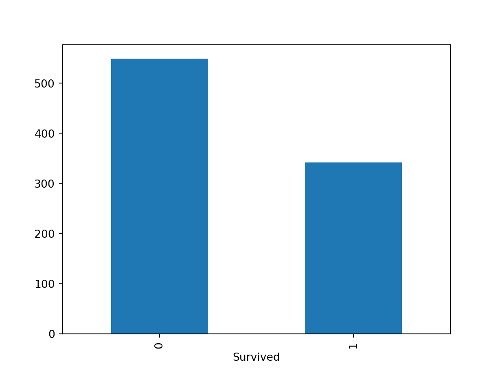

Chapter 18 Pandas
- Methods to deal with tabular data
- These methods are to replicate what
dplyrin R is capable of - To handle tabular data like data frames, I would still recommend using R instead of Python for beginners.
pandascan be intimidating for a lot of beginners. - The
statsmodelscan download R datasets from https://vincentarelbundock.github.io/Rdatasets/datasets.html
18.2 Importing/Exporting Data
Importing:
pd.read_csv(filename): From a CSV filepd.read_table(filename): From a delimited text file (like TSV)pd.read_excel(filename): From an Excel filepd.read_sql(query, connection_object): Read from a SQL table/databasepd.read_json(json_string): Read from a JSON formatted string, URL or file.pd.read_html(url): Parses an html URL, string or file and extracts tables to a list of dataframespd.read_clipboard(): Takes the contents of your clipboard and passes it to read_table()pd.DataFrame(dict): From a dict, keys for columns names, values for data as listspd.DataFrame(list of tuples): From a list, which includes the records of each row
Exporting:
df.to_csv(filename)df.to_excel(filename)df.to_sql(table_name, connection_object)df.to_json(filename)
DEMO_DATA_DIR = 'demo_data/titanic/'
iris = sm.datasets.get_rdataset('iris').data
titanic = pd.read_csv(DEMO_DATA_DIR+'train.csv')
iris.head() Sepal.Length Sepal.Width Petal.Length Petal.Width Species
0 5.1 3.5 1.4 0.2 setosa
1 4.9 3.0 1.4 0.2 setosa
2 4.7 3.2 1.3 0.2 setosa
3 4.6 3.1 1.5 0.2 setosa
4 5.0 3.6 1.4 0.2 setosa PassengerId Survived Pclass ... Fare Cabin Embarked
0 1 0 3 ... 7.2500 NaN S
1 2 1 1 ... 71.2833 C85 C
2 3 1 3 ... 7.9250 NaN S
3 4 1 1 ... 53.1000 C123 S
4 5 0 3 ... 8.0500 NaN S
[5 rows x 12 columns] A B C D
0 1 2 3 4
1 5 6 7 8
2 9 10 11 12 A B C
0 1 5 9
1 2 6 10
2 3 7 11
3 4 8 12When you have data of the columns, use dict; when you have the data of the rows, use list as the source data structures of a data frame.
18.3 Inspecting Data Frame
df.head(n): First n rows of the DataFramedf.tail(n): Last n rows of the DataFramedf.shape: Number of rows and columnsdf.info(): Index, Datatype and Memory informationdf.describe(): Summary statistics for numerical columnss.value_counts(dropna=False): View unique values and countsdf.apply(pd.Series.value_counts): Unique values and counts for all columnsdf.columnsdf.indexdf.dtypesdf.set_index('column_name'): Set a column as the index
<class 'pandas.core.frame.DataFrame'>
RangeIndex: 150 entries, 0 to 149
Data columns (total 5 columns):
# Column Non-Null Count Dtype
--- ------ -------------- -----
0 Sepal.Length 150 non-null float64
1 Sepal.Width 150 non-null float64
2 Petal.Length 150 non-null float64
3 Petal.Width 150 non-null float64
4 Species 150 non-null object
dtypes: float64(4), object(1)
memory usage: 6.0+ KB Sepal.Length Sepal.Width Petal.Length Petal.Width
count 150.000000 150.000000 150.000000 150.000000
mean 5.843333 3.057333 3.758000 1.199333
std 0.828066 0.435866 1.765298 0.762238
min 4.300000 2.000000 1.000000 0.100000
25% 5.100000 2.800000 1.600000 0.300000
50% 5.800000 3.000000 4.350000 1.300000
75% 6.400000 3.300000 5.100000 1.800000
max 7.900000 4.400000 6.900000 2.500000(150, 5) Sepal.Length Sepal.Width Petal.Length Petal.Width Species
0 5.1 3.5 1.4 0.2 setosa
1 4.9 3.0 1.4 0.2 setosa
2 4.7 3.2 1.3 0.2 setosa Sepal.Length Sepal.Width Petal.Length Petal.Width Species
147 6.5 3.0 5.2 2.0 virginica
148 6.2 3.4 5.4 2.3 virginica
149 5.9 3.0 5.1 1.8 virginicaSpecies
setosa 50
versicolor 50
virginica 50
Name: count, dtype: int64Index(['Sepal.Length', 'Sepal.Width', 'Petal.Length', 'Petal.Width',
'Species'],
dtype='object')RangeIndex(start=0, stop=150, step=1)Sepal.Length float64
Sepal.Width float64
Petal.Length float64
Petal.Width float64
Species object
dtype: object18.4 Basic Functions
(150, 5)Index(['Sepal.Length', 'Sepal.Width', 'Petal.Length', 'Petal.Width',
'Species'],
dtype='object')RangeIndex(start=0, stop=150, step=1)<class 'pandas.core.frame.DataFrame'>
RangeIndex: 150 entries, 0 to 149
Data columns (total 5 columns):
# Column Non-Null Count Dtype
--- ------ -------------- -----
0 Sepal.Length 150 non-null float64
1 Sepal.Width 150 non-null float64
2 Petal.Length 150 non-null float64
3 Petal.Width 150 non-null float64
4 Species 150 non-null object
dtypes: float64(4), object(1)
memory usage: 6.0+ KB Sepal.Length Sepal.Width Petal.Length Petal.Width
count 150.000000 150.000000 150.000000 150.000000
mean 5.843333 3.057333 3.758000 1.199333
std 0.828066 0.435866 1.765298 0.762238
min 4.300000 2.000000 1.000000 0.100000
25% 5.100000 2.800000 1.600000 0.300000
50% 5.800000 3.000000 4.350000 1.300000
75% 6.400000 3.300000 5.100000 1.800000
max 7.900000 4.400000 6.900000 2.500000Sepal.Length float64
Sepal.Width float64
Petal.Length float64
Petal.Width float64
Species object
dtype: object18.5 Subsetting Data Frame
df[col]: Returns column with label col as Seriesdf[[col1, col2]]: Returns columns as a new DataFrames.iloc[0]: Selection by positions.loc['index_one']: Selection by indexdf.iloc[0,:]: First rowdf.iloc[0,0]: First element of first column
0 setosa
1 setosa
2 setosa
3 setosa
4 setosa
5 setosa
Name: Species, dtype: object0 setosa
1 setosa
2 setosa
3 setosa
4 setosa
Name: Species, dtype: object18.6 Exploration
How to perform the key functions provided in R dplyr?
dplyrKey Verbsfilter()select()mutate()arrange()summarize()group_by()
18.6.1 NA Values
Functions to take care of NA values:
df.isnull()df.notnull()df.dropna(): Drop rows with null valuesdf.dropna(axis=1): Drop columns with null valuesdf.dropna(axis=1, thresh=n): Drop all columns have less than n non-valuesdf.fillna(x): Replaces all null values withxs.fillna(s.mean()): Replace the null values of a Series with its mean scoreQuick check of the null values in each column
PassengerId 0
Survived 0
Pclass 0
Name 0
Sex 0
Age 177
SibSp 0
Parch 0
Ticket 0
Fare 0
Cabin 687
Embarked 2
dtype: int64 PassengerId Survived Pclass ... Ticket Fare Embarked
0 1 0 3 ... A/5 21171 7.2500 S
1 2 1 1 ... PC 17599 71.2833 C
2 3 1 3 ... STON/O2. 3101282 7.9250 S
3 4 1 1 ... 113803 53.1000 S
4 5 0 3 ... 373450 8.0500 S
.. ... ... ... ... ... ... ...
886 887 0 2 ... 211536 13.0000 S
887 888 1 1 ... 112053 30.0000 S
888 889 0 3 ... W./C. 6607 23.4500 S
889 890 1 1 ... 111369 30.0000 C
890 891 0 3 ... 370376 7.7500 Q
[891 rows x 11 columns]PassengerId 891
Survived 891
Pclass 891
Name 891
Sex 891
Age 714
SibSp 891
Parch 891
Ticket 891
Fare 891
Cabin 204
Embarked 889
dtype: int6418.6.2 Converting Data Types
s.astype(float): Convert a Series into afloattype
Sepal.Length float64
Sepal.Width float64
Petal.Length float64
Petal.Width float64
Species object
dtype: objectSepal.Length float64
Sepal.Width float64
Petal.Length float64
Petal.Width float64
Species category
dtype: object
18.6.4 Transformation
s.replace(X, Y)
PassengerId Survived Pclass ... Fare Cabin Embarked
0 1 0 3 ... 7.2500 NaN S
1 2 1 1 ... 71.2833 C85 C
2 3 1 3 ... 7.9250 NaN S
3 4 1 1 ... 53.1000 C123 S
4 5 0 3 ... 8.0500 NaN S
[5 rows x 12 columns]Index(['PassengerId', 'Survived', 'Pclass', 'Name', 'Sex', 'Age', 'SibSp',
'Parch', 'Ticket', 'Fare', 'Cabin', 'Embarked'],
dtype='object') PassengerId Survived Age SibSp Parch Fare
Sex Pclass
female 1 469.212766 0.968085 34.611765 0.553191 0.457447 106.125798
2 443.105263 0.921053 28.722973 0.486842 0.605263 21.970121
3 399.729167 0.500000 21.750000 0.895833 0.798611 16.118810
male 1 455.729508 0.368852 41.281386 0.311475 0.278689 67.226127
2 447.962963 0.157407 30.740707 0.342593 0.222222 19.741782
3 455.515850 0.135447 26.507589 0.498559 0.224784 12.661633 PassengerId Survived Age SibSp Parch Fare
Sex Pclass
female 1 525.375000 0.875000 14.125000 0.500000 0.875000 104.083337
2 369.250000 1.000000 8.333333 0.583333 1.083333 26.241667
3 374.942857 0.542857 8.428571 1.571429 1.057143 18.727977
male 1 526.500000 1.000000 8.230000 0.500000 2.000000 116.072900
2 527.818182 0.818182 4.757273 0.727273 1.000000 25.659473
3 437.953488 0.232558 9.963256 2.069767 1.000000 22.752523
18.6.5 filter()
Sepal.Length Sepal.Width Petal.Length Petal.Width Species
0 5.1 3.5 1.4 0.2 setosa
5 5.4 3.9 1.7 0.4 setosa
10 5.4 3.7 1.5 0.2 setosa
14 5.8 4.0 1.2 0.2 setosa
15 5.7 4.4 1.5 0.4 setosa
.. ... ... ... ... ...
145 6.7 3.0 5.2 2.3 virginica
146 6.3 2.5 5.0 1.9 virginica
147 6.5 3.0 5.2 2.0 virginica
148 6.2 3.4 5.4 2.3 virginica
149 5.9 3.0 5.1 1.8 virginica
[118 rows x 5 columns]When there are more than one filtering condition, put the conditions in parentheses.Empty DataFrame
Columns: [Sepal.Length, Sepal.Width, Petal.Length, Petal.Width, Species]
Index: [] Sepal.Length Sepal.Width Petal.Length Petal.Width Species
0 5.1 3.5 1.4 0.2 setosa
5 5.4 3.9 1.7 0.4 setosa
10 5.4 3.7 1.5 0.2 setosa
14 5.8 4.0 1.2 0.2 setosa
15 5.7 4.4 1.5 0.4 setosa
.. ... ... ... ... ...
145 6.7 3.0 5.2 2.3 virginica
146 6.3 2.5 5.0 1.9 virginica
147 6.5 3.0 5.2 2.0 virginica
148 6.2 3.4 5.4 2.3 virginica
149 5.9 3.0 5.1 1.8 virginica
[118 rows x 5 columns] Sepal.Length Sepal.Width Petal.Length Petal.Width Species
15 5.7 4.4 1.5 0.4 setosa
32 5.2 4.1 1.5 0.1 setosa
33 5.5 4.2 1.4 0.2 setosa18.6.6 arrange()
Sepal.Length Sepal.Width Petal.Length Petal.Width Species
106 4.9 2.5 4.5 1.7 virginica
121 5.6 2.8 4.9 2.0 virginica
113 5.7 2.5 5.0 2.0 virginica
101 5.8 2.7 5.1 1.9 virginica
114 5.8 2.8 5.1 2.4 virginica
.. ... ... ... ... ...
33 5.5 4.2 1.4 0.2 setosa
36 5.5 3.5 1.3 0.2 setosa
15 5.7 4.4 1.5 0.4 setosa
18 5.7 3.8 1.7 0.3 setosa
14 5.8 4.0 1.2 0.2 setosa
[150 rows x 5 columns]18.6.7 select()
Sepal.Length Species
0 5.1 setosa
1 4.9 setosa
2 4.7 setosa
3 4.6 setosa
4 5.0 setosa
.. ... ...
145 6.7 virginica
146 6.3 virginica
147 6.5 virginica
148 6.2 virginica
149 5.9 virginica
[150 rows x 2 columns] Sepal.Width Petal.Length Petal.Width Species
0 3.5 1.4 0.2 setosa
1 3.0 1.4 0.2 setosa
2 3.2 1.3 0.2 setosa
3 3.1 1.5 0.2 setosa
4 3.6 1.4 0.2 setosa Species Sepal.Length
0 setosa 5.1
1 setosa 4.9
2 setosa 4.7
3 setosa 4.6
4 setosa 5.0
.. ... ...
145 virginica 6.7
146 virginica 6.3
147 virginica 6.5
148 virginica 6.2
149 virginica 5.9
[150 rows x 2 columns] Species Sepal.Length
0 setosa 5.1
1 setosa 4.9
2 setosa 4.7
3 setosa 4.6
4 setosa 5.0
.. ... ...
145 virginica 6.7
146 virginica 6.3
147 virginica 6.5
148 virginica 6.2
149 virginica 5.9
[150 rows x 2 columns]<class 'pandas.core.series.Series'>18.6.8 mutate()
## mutate
iris['Species_new'] = iris['Species'].apply(lambda x: len(x))
iris['Species_initial'] = iris['Species'].apply(lambda x: x[:2].upper())
iris Sepal.Length Sepal.Width ... Species_new Species_initial
0 5.1 3.5 ... 6 SE
1 4.9 3.0 ... 6 SE
2 4.7 3.2 ... 6 SE
3 4.6 3.1 ... 6 SE
4 5.0 3.6 ... 6 SE
.. ... ... ... ... ...
145 6.7 3.0 ... 9 VI
146 6.3 2.5 ... 9 VI
147 6.5 3.0 ... 9 VI
148 6.2 3.4 ... 9 VI
149 5.9 3.0 ... 9 VI
[150 rows x 7 columns] Sepal.Length Sepal.Width ... Species_initial Specias_initial2
0 5.1 3.5 ... SE SETOSA
1 4.9 3.0 ... SE SETOSA
2 4.7 3.2 ... SE SETOSA
3 4.6 3.1 ... SE SETOSA
4 5.0 3.6 ... SE SETOSA
.. ... ... ... ... ...
145 6.7 3.0 ... VI VIRGINICA
146 6.3 2.5 ... VI VIRGINICA
147 6.5 3.0 ... VI VIRGINICA
148 6.2 3.4 ... VI VIRGINICA
149 5.9 3.0 ... VI VIRGINICA
[150 rows x 8 columns]18.6.9 apply(), mutate_if()
df.apply(np.mean): Apply a function to all columnsdf.apply(np.max,axis=1): Apply a function to each row
When apply() functions to the data frame, the axis=1 refers to row mutation and axis=0 refers to column mutation. This is very counter-intuitive for R users.
Sepal.Length Sepal.Width Petal.Length ... Species Species_new Species_initial
0 5.1 3.5 1.4 ... setosa 6 SE
1 4.9 3.0 1.4 ... setosa 6 SE
2 4.7 3.2 1.3 ... setosa 6 SE
3 4.6 3.1 1.5 ... setosa 6 SE
4 5.0 3.6 1.4 ... setosa 6 SE
5 5.4 3.9 1.7 ... setosa 6 SE
6 4.6 3.4 1.4 ... setosa 6 SE
7 5.0 3.4 1.5 ... setosa 6 SE
8 4.4 2.9 1.4 ... setosa 6 SE
9 4.9 3.1 1.5 ... setosa 6 SE
[10 rows x 7 columns]0 3.7
1 3.2
2 3.4
3 3.3
4 3.8
5 4.3
6 3.7
7 3.6
8 3.1
9 3.2
dtype: float6418.6.10 group_by() and summarize()
Sepal.Length Sepal.Width Petal.Length Petal.Width
Species
setosa 5.006 3.428 1.462 0.246
versicolor 5.936 2.770 4.260 1.326
virginica 6.588 2.974 5.552 2.026iris.filter(['Species','Sepal.Length']).groupby('Species').agg({'Sepal.Length':['mean','count','std']}) Sepal.Length
mean count std
Species
setosa 5.006 50 0.352490
versicolor 5.936 50 0.516171
virginica 6.588 50 0.635880 PassengerId Survived Pclass ... Fare Cabin Embarked
0 1 0 3 ... 7.2500 NaN S
1 2 1 1 ... 71.2833 C85 C
2 3 1 3 ... 7.9250 NaN S
3 4 1 1 ... 53.1000 C123 S
4 5 0 3 ... 8.0500 NaN S
[5 rows x 12 columns] PassengerId ... Embarked
Pclass Sex ...
1 female 44106 ... CSSCCSSSSCCCCCSCSCSSSSCSCCCCCCSCCCSCSSCCCCSCQS...
male 55599 ... SSSCCSCSSCSSCCSSCSSCCSSCSSCSQSSSSSCSCSSSSSSSCC...
2 female 33676 ... CSSCSSSSSSSSSSSSSSSSQSSQSSSSSSCSSSSSSSSSSSSCSS...
male 48380 ... SSSSSSSSSSCSCSSSSSSCSSSSSSSSSSSSSSSSSSSCCSSSSS...
3 female 57561 ... SSSSSCQSSQQSCSQQSSSSQSSSQCSCSCSCSSSQSSSSQSQSQS...
male 158064 ... SSQSSSQCSCSCSQCSSCSCSCSSCSSSSSSSSSSSSSSSSSSSSS...
[6 rows x 10 columns] Survived
Pclass Sex
1 female 91
male 45
2 female 70
male 17
3 female 72
male 4718.6.11 rename()
Sepal.Length Sepal.Width ... Species_new Species_initial
0 5.1 3.5 ... 6 SE
1 4.9 3.0 ... 6 SE
2 4.7 3.2 ... 6 SE
3 4.6 3.1 ... 6 SE
4 5.0 3.6 ... 6 SE
.. ... ... ... ... ...
145 6.7 3.0 ... 9 VI
146 6.3 2.5 ... 9 VI
147 6.5 3.0 ... 9 VI
148 6.2 3.4 ... 9 VI
149 5.9 3.0 ... 9 VI
[150 rows x 7 columns]Index(['Sepal.Length', 'Sepal.Width', 'Petal.Length', 'Petal.Width', 'Species',
'Species_new', 'Species_initial'],
dtype='object')- Selective renaming column names
SLen Sepal.Width Petal.Length ... Species Species_new Species_initial
0 5.1 3.5 1.4 ... setosa 6 SE
1 4.9 3.0 1.4 ... setosa 6 SE
2 4.7 3.2 1.3 ... setosa 6 SE
3 4.6 3.1 1.5 ... setosa 6 SE
4 5.0 3.6 1.4 ... setosa 6 SE
.. ... ... ... ... ... ... ...
145 6.7 3.0 5.2 ... virginica 9 VI
146 6.3 2.5 5.0 ... virginica 9 VI
147 6.5 3.0 5.2 ... virginica 9 VI
148 6.2 3.4 5.4 ... virginica 9 VI
149 5.9 3.0 5.1 ... virginica 9 VI
[150 rows x 7 columns]- Massive renaming column names
XXSLen XXSepal.Width ... XXSpecies_new XXSpecies_initial
0 5.1 3.5 ... 6 SE
1 4.9 3.0 ... 6 SE
2 4.7 3.2 ... 6 SE
3 4.6 3.1 ... 6 SE
4 5.0 3.6 ... 6 SE
.. ... ... ... ... ...
145 6.7 3.0 ... 9 VI
146 6.3 2.5 ... 9 VI
147 6.5 3.0 ... 9 VI
148 6.2 3.4 ... 9 VI
149 5.9 3.0 ... 9 VI
[150 rows x 7 columns] PassengerId Survived Pclass ... Fare Cabin Embarked
0 1 0 3 ... 7.2500 NaN S
1 2 1 1 ... 71.2833 C85 C
2 3 1 3 ... 7.9250 NaN S
3 4 1 1 ... 53.1000 C123 S
4 5 0 3 ... 8.0500 NaN S
5 6 0 3 ... 8.4583 NaN Q
6 7 0 1 ... 51.8625 E46 S
7 8 0 3 ... 21.0750 NaN S
8 9 1 3 ... 11.1333 NaN S
9 10 1 2 ... 30.0708 NaN C
[10 rows x 12 columns] PassengerId ... Embarked
Name ...
BRAUND,_MR._OWEN_HARRIS 1 ... S
CUMINGS,_MRS._JOHN_BRADLEY_(FLORENCE_BRIGGS_THA... 2 ... C
HEIKKINEN,_MISS._LAINA 3 ... S
FUTRELLE,_MRS._JACQUES_HEATH_(LILY_MAY_PEEL) 4 ... S
ALLEN,_MR._WILLIAM_HENRY 5 ... S
... ... ... ...
MONTVILA,_REV._JUOZAS 887 ... S
GRAHAM,_MISS._MARGARET_EDITH 888 ... S
JOHNSTON,_MISS._CATHERINE_HELEN_"CARRIE" 889 ... S
BEHR,_MR._KARL_HOWELL 890 ... C
DOOLEY,_MR._PATRICK 891 ... Q
[891 rows x 11 columns]18.7 Join/Combine Data Frames
df1.append(df2): Add the rows in df1 to the end of df2 (columns should be identical) (rbind()in R)pd.concat([df1, df2],axis=1): Add the columns in df1 to the end of df2 (rows should be identical) (cbind()in R)df1.join(df2,on=col1,how='inner'): SQL-style join the columns in df1 with the columns on df2 where the rows for col have identical values. ‘how’ can be one of ‘left’, ‘right’, ‘outer’, ‘inner’
18.8 Statistics
df.describe(): Summary statistics for numerical columnsdf.mean(): Returns the mean of all columnsdf.corr(): Returns the correlation between columns in a DataFramedf.count(): Returns the number of non-null values in each DataFrame columndf.max(): Returns the highest value in each columndf.min(): Returns the lowest value in each columndf.median(): Returns the median of each columndf.std(): Returns the standard deviation of each column
PassengerId 891
Survived 891
Pclass 891
Name 891
Sex 891
Age 714
SibSp 891
Parch 891
Ticket 891
Fare 891
Cabin 204
Embarked 889
dtype: int64PassengerId 446.0000
Survived 0.0000
Pclass 3.0000
Age 28.0000
SibSp 0.0000
Parch 0.0000
Fare 14.4542
dtype: float64